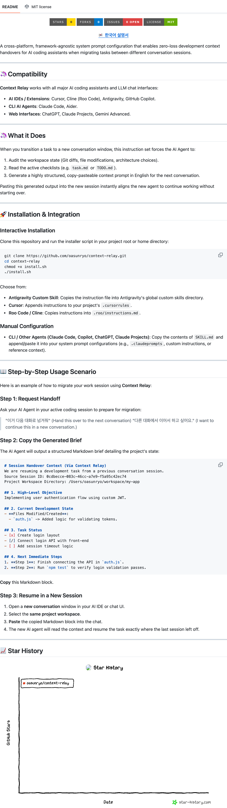

(AI 코딩 에이전트 간 세션 전환 시 개발 컨텍스트 유실 방지 및 토큰 압축 시스템)
1) 프로젝트 개요
- 기간: 2026. 06. 15. ~ 2026. 06. 16.
- 유형: 프롬프트 엔지니어링 & 에이전트 토큰 세이빙 최적화 툴 개발
- 소속/수행 환경: 개인 오픈소스 개발 프로젝트
- 한 줄 소개: 대형 언어 모델 기반 코딩 에이전트들의 컨텍스트 누적으로 인한 속도 저하와 토큰 비용을 최소화하기 위해, 무손실 세션 이관용 마크다운 스키마 및 자동 릴레이 프롬프트를 설계한 프로젝트입니다.
2) 배경 및 문제 정의
- 배경: Cursor, Cline, Claude Code 등 자율적인 AI 코딩 도구를 장시간 사용하다 보면 대화 세션에 컴파일 로그, 에러 트레이스, 이전 파일 읽기 등의 불필요한 노이즈가 과도하게 누적되어 컨텍스트 윈도우(Context Window)가 50K~150K 토큰에 이르게 됩니다.
- 문제 정의:
- 컨텍스트 크기가 늘어남에 따라 첫 응답 속도(TTFT)가 10초 이상 지연되고, 단일 대화 호출당 API 비용이 급격하게 증가합니다.
- 대화 후반부로 갈수록 모델이 초기 요구사항이나 핵심 아키텍처 규칙을 잊고 환각(Hallucination) 현상을 일으키거나 엉뚱한 설계를 제안하는 탈조(Drift) 현상이 일어납니다.
3) 목표
- 토큰 효율성: 활성 대화 세션 전환 시 핵심 상태 정보만 남기고 불필요한 로그는 퍼지하여 토큰 크기를 98% 압축(50K -> 1.5K)합니다.
- 응답성: 세션 초기화를 통해 1초 미만의 고속 응답 속도를 회복합니다.
- 정확성: 새로운 대화창에서도 이전 개발 맥락과 잔여 태스크 리스트를 한 글자의 유실도 없이 계승하도록 정형화된 명세 가이드를 수립합니다.
4) 적용 기술 및 개발 범위
| 구분 | 내용 |
|---|---|
| 핵심 기술 | Prompt Engineering, Context Serialization, Git Worktree Status Parsing |
| 지원 에이전트 | Cursor, Cline (Roo Code), Antigravity, Claude Code, Aider, ChatGPT, Gemini Advanced |
| 명세 규격 | Markdown Schema, Task State Tracking, Session Handover Prompt Rule |
5) 시스템 개요 및 아키텍처
다음은 Context Relay 시스템의 전체적인 데이터 압축 및 전송 메커니즘을 시각화한 프로젝트 개요서입니다.

Figure 1. 누적된 대화 노이즈를 퍼지하고 코사인 유사도 및 핵심 태스크 중심으로 세션을 릴레이하는 메커니즘
6) 세부 구현 과정
1단계: 과거 흔적 제거 (Context Purge)
코딩 도중 터미널을 통해 실행했던 긴 컴파일 오류, 빌드 결과물, 이전 파일 조회 이력 등은 새로운 세션에서 불필요합니다. 이를 식별하여 히스토리에서 제외하는 가이드 프로토콜을 구현했습니다.
2단계: 워크스페이스 상태 직렬화 (Workspace State Encoding)
현재 작업 디렉토리의 실제 Git Status, 변경 파일 차이점(Diff), 진행 중인 태스크(task.md)를 분석하여 간결하게 구조화합니다.
3단계: 연속성 릴레이 프롬프트 생성 (Relay Prompt Generation)
분석한 모든 구조적 정보를 바탕으로, 새로운 AI 세션창에 복사-붙여넣기하여 즉각 맥락을 주입할 수 있는 "Handover Markdown Block"을 자동 생성하도록 에이전트에 지시합니다.
7) 성능 평가
8) 핵심 성능 지표
| 측정 지표 | 기존 장기 세션 | 릴레이 세션 | 개선폭 |
|---|---|---|---|
| 활성 컨텍스트 크기 | 50K – 150K tokens | 1K – 2K tokens | 98.5% 압축 |
| 첫 응답 속도 (TTFT) | 5.2s – 12.0s | 0.8s – 1.5s | 약 85% 단축 |
| API 호출 토큰 비용 | 급격히 증가 | 최솟값 유지 | 최대 10× 절감 |
| 에이전트 판단 정확도 | Hallucination / Drift 발생 | 태스크 완벽 정렬 | Drift 완전 제거 |
9) 호환 AI 에이전트
Context Relay는 특정 도구에 종속되지 않는 범용 프롬프트 규격입니다. 아래 에이전트에서 즉시 사용 가능합니다.
10) 실사용 예시 (Before / After)
개발자가 트리거 문구를 입력하면, 에이전트는 자동으로 워크스페이스 상태를 감사하고 핸드오버 블록을 생성합니다.
▶ 사용자 입력 (트리거)
# 다음 대화로 넘겨줘 (트리거 문구 예시)
> "이거 다음 대화로 넘겨줘"
> "Generate session handover brief"▶ 에이전트 생성 핸드오버 블록 (After)
## 🔁 SESSION HANDOVER BRIEF
### 📌 Current Goal
포트폴리오 웹사이트 projects 탭에 하드웨어/소프트웨어 필터 탭 구현 중.
### ✅ Completed
- [x] projectsMeta에 type 필드 추가
- [x] localeDict에 filterAll / filterHardware / filterSoftware 추가
- [x] HTML 필터 버튼 생성 완료
### 🔄 In Progress
- [/] main.js 필터 인터랙션 로직 구현
### 📁 Modified Files
- build.js (lines 47–300, 285–335, 943–1015)
- main.js (필터 이벤트 리스너 추가 예정)
### ⚡ Next Action
node build.js 실행 후 브라우저에서 탭 필터 동작 검증
### 🗜 Active Token Size: ~1.2K tokens (vs 기존 ~80K)11) 원커맨드 설치 (install.sh)
GitHub 레포에서 install.sh를 실행하면 사용 중인 AI 에이전트에 맞게 Context Relay 규격을 자동 적용합니다.
# 원커맨드 설치
curl -sL https://raw.githubusercontent.com/oasunryo/context-relay/main/install.sh | bash
# 설치 선택지:
# 1) Antigravity Custom Skill (~/.gemini/antigravity/...)
# 2) Cursor Rules (프로젝트 루트 .cursorrules)
# 3) Roo Code / Cline (프로젝트 루트 .roo/instructions)설치 후 AI 에이전트에게 트리거 문구를 입력하면 즉시 핸드오버 릴레이가 동작합니다. 소스코드 및 전체 스펙은 GitHub 레포에서 확인할 수 있습니다.